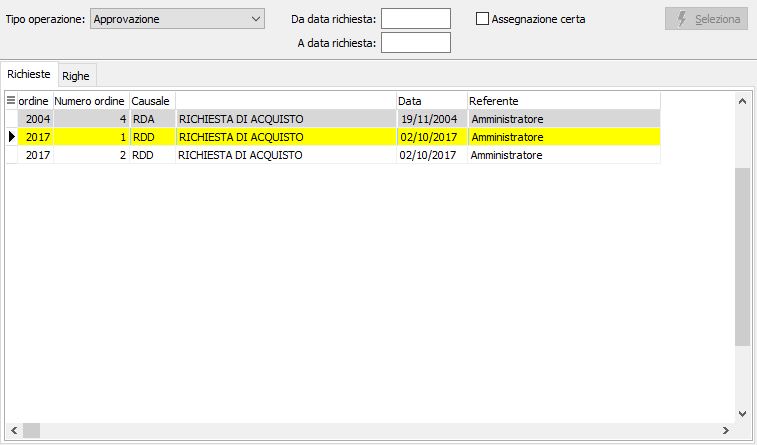
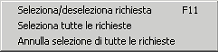

Approvazione richieste di acquisto
La procedura consente, da parte del responsabile dell'ufficio produzione, di approvare le richieste di acquisto e renderle disponibili per le operazioni di assegnazione ed accettazione. La procedura consente anche di annullare l'approvazione delle richieste.

TIPO SELEZIONE: indica l'operazione da effettuare: approvazione oppure annullamento dell'approvazione.
DA DATA RICHIESTA: indica la data con cui iniziare la selezione delle richieste per effettuare l'operazione selezionata.
A DATA RICHIESTA: indica la data con cui terminare la selezione delle richieste per effettuare l'operazione selezionata.
ASSEGNAZIONE CERTA: Se la casella è spuntata l'assegnazione dell'utente ufficio acquisti avviene solo nel caso vi sia un instradamento certo verso un singolo utente ufficio acquisti, nel caso l'instradamento ritorni più di un utente non sarà effettuata alcuna assegnazione. Se la casella è vuota l'assegnazione dell'utente ufficio acquisti avviene comunque, anche nel caso in cui l'instradamento ritorni più utenti; sarà assegnato il primo utente in elenco.
La pressione del pulsante Selezione determina la ricerca dei documenti che saranno riportati nella griglia sottostante.

L'utente può selezionare o deselezionare le richieste da approvare tramite il doppio clic del mouse, il tasto F11 o mediante il menù riportato a lato richiamabile con il pulsante destro del mouse. Al termine della selezione tramite la pressione del pulsante Salva sulla toolbar o del tasto F10 viene effettuato il salvataggio dei dati.